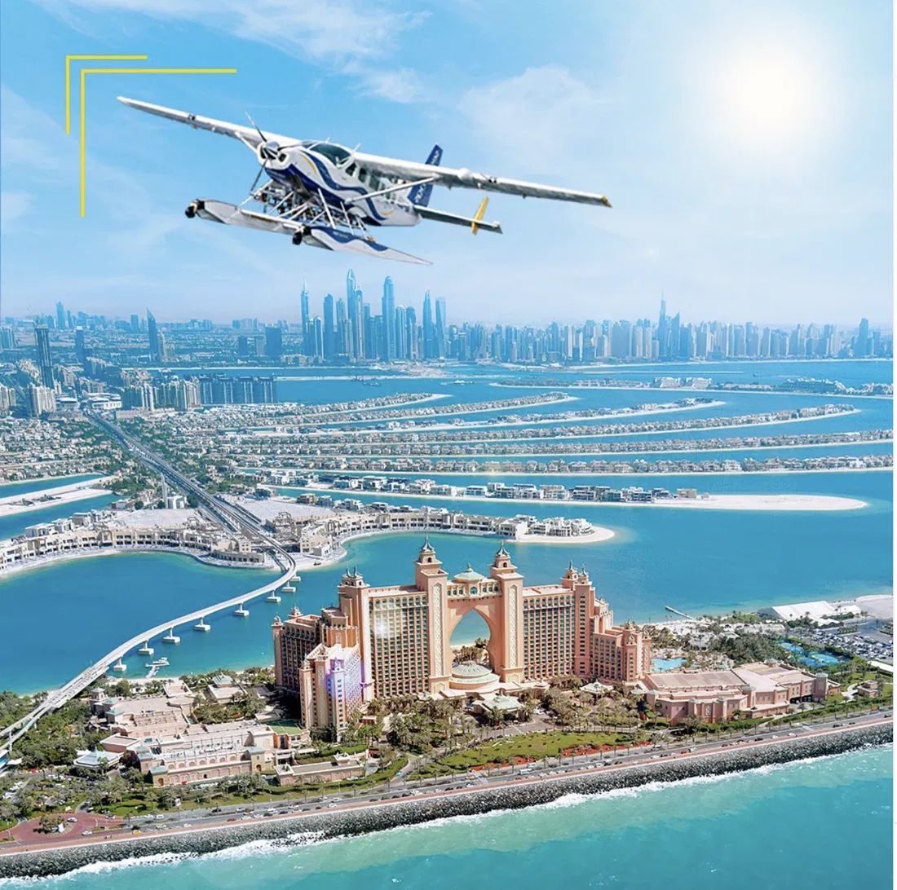
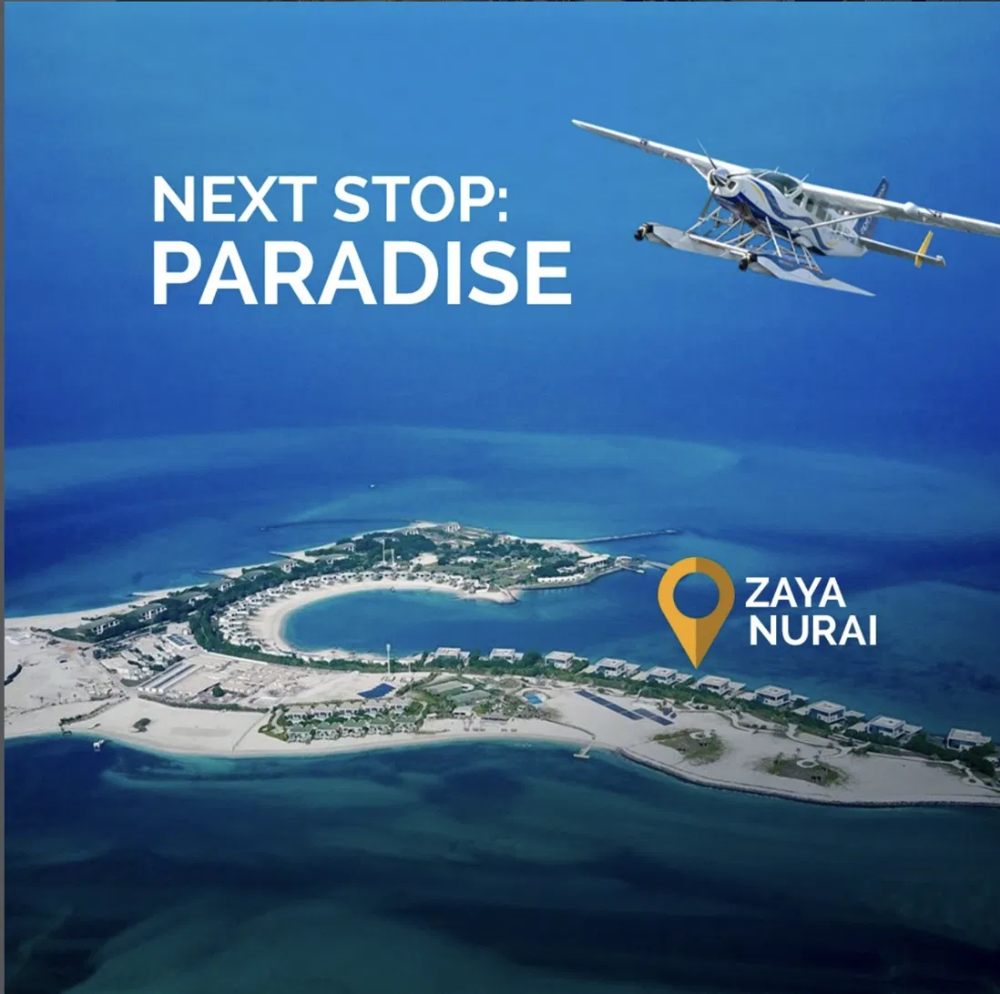

Campaign creative from the re-launch — Seawings seaplane over Dubai's iconic landmarks.
See Dubai Like Never Before
Re-launching a luxury experience by selling the view, not the flight
The Situation
Seawings sold something genuinely rare — luxury seaplane tours over Dubai and the UAE, giving guests the city from 1,500 feet through a scenic cabin window.
But it was a niche, high-consideration product fighting for attention against the more familiar helicopter tour. The re-launch needed to do two things: make the experience feel unmissable, and shift bookings onto the brand's own channels rather than leaving margin with resellers.
What I Did
I led the digital re-launch around a single idea — "See Dubai Like Never Before" — built on the insight that people don't buy a flight, they buy a feeling: seeing an icon-studded city with the people they love, from a view almost no one gets.
Positioning & Creative: Sold the emotional payoff — Palm Jumeirah, Burj Al Arab, Burj Khalifa and The World Islands from above — anchored by a cinematic hero film, positioned against helicopter tours on comfort, the panoramic window and the shared moment.
Digital Re-launch: Launched a new mobile-optimised website and rebuilt the booking funnel to drive direct bookings, supported by paid search (8x ROI) and a refreshed content and social presence.
Social Proof: Drove reviews and owned-social engagement to build the trust a premium, once-in-a-trip purchase needs before people commit — social engagement up from 5% to 14%, TripAdvisor reviews doubled.
The Commercial Result
- 1M+ campaign views — the film gave a niche experience genuine mass reach.
- Website traffic +100% and direct bookings +60%, moving demand onto owned channels and protecting margin.
- 8x ROI on paid search — efficient acquisition against a high-ticket product.
- Social engagement up from 5% to 14% and TripAdvisor reviews doubled, compounding the social proof that converts high-consideration buyers.
"What I'm proudest of: taking a beautiful but under-appreciated product and making the experience the hero — which is what moved traffic, bookings and margin the right way."